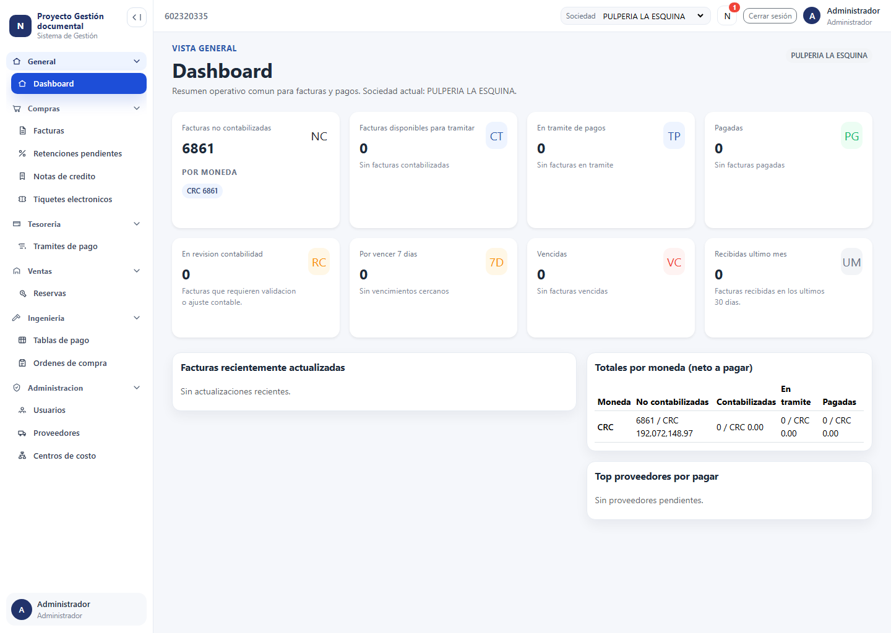
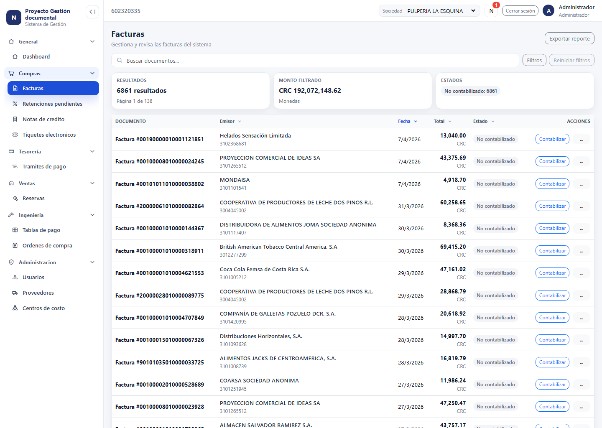
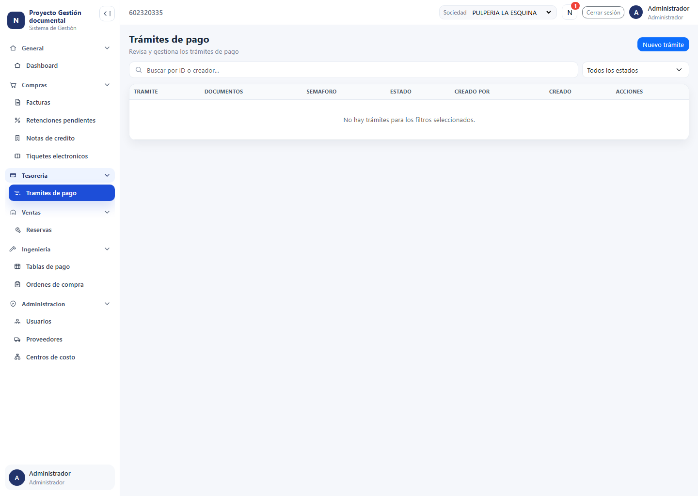
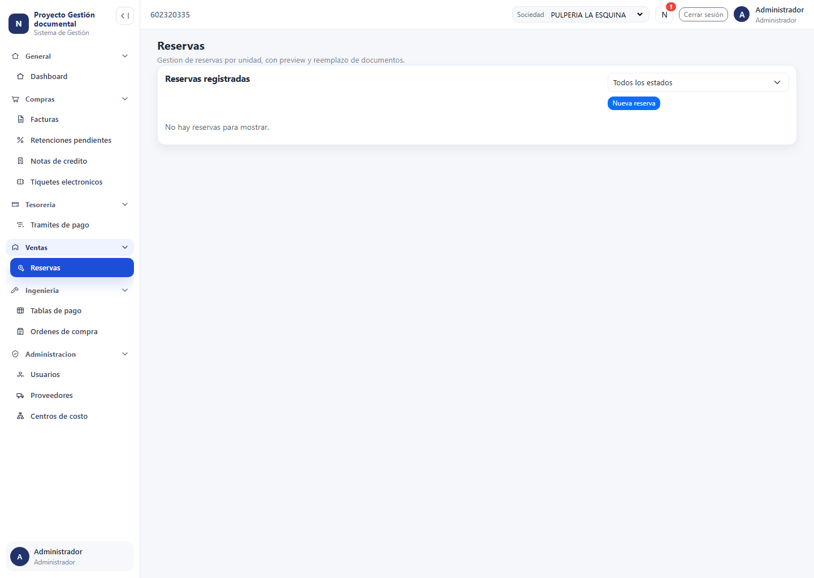
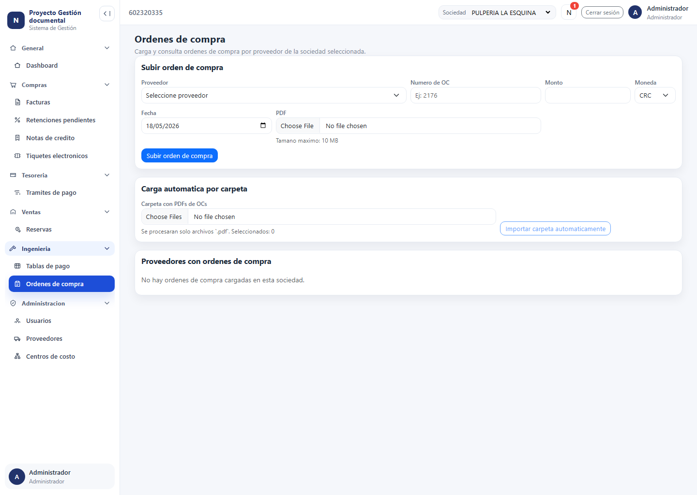
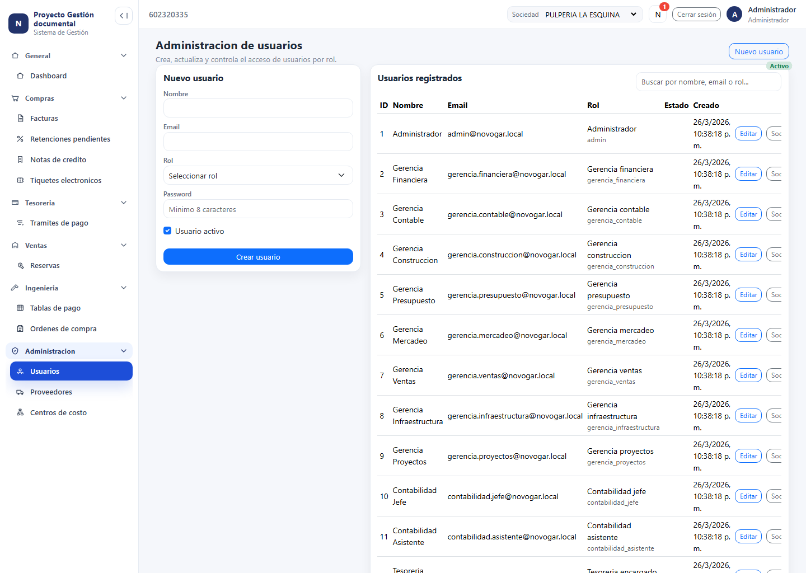

Proyecto destacado
Plataforma de gestión documental y workflow de pagos
Sistema interno orientado a centralizar facturas, trazabilidad
documental, contabilización, workflow de trámites de pago y operación
administrativa. La solución combina producto, arquitectura y ejecución
full stack para resolver procesos financieros sensibles con mayor
control y visibilidad.
Alcance funcional
La plataforma reemplaza procesos dispersos entre correos, archivos y
hojas de cálculo. Centraliza documentos fiscales, su estado
operativo, la relación con sociedades, proveedores, centros de costo
y el flujo de aprobación y pago.
- Login con JWT, roles y acceso por sociedades.
-
Gestión de facturas, notas de crédito, tiquetes y adjuntos
PDF/XML.
-
Contabilización con asociaciones operativas y respaldo documental.
- Workflow de trámites de pago con historial por etapa.
-
Dashboard operativo con métricas y separación monetaria por
divisa.
-
Módulos adicionales para reservas, órdenes de compra y
administración.
Contribución técnica
-
Construcción y evolución de frontend modular en React con rutas
lazy-loaded.
-
Diseño de pantallas operativas para dashboard, facturas, trámites,
reservas y administración.
-
Integración de backend en Express con repositorios SQL sobre
PostgreSQL.
-
Soporte a permisos, sesión autenticada, filtros por sociedad y
flujo documental.
-
Trabajo sobre trazabilidad, auditoría e historiales de estados.
-
Automatización de evidencia visual con Playwright para QA y
presentaciones.
Decisiones de ingeniería relevantes
- Separación clara entre frontend React y backend Express.
-
Persistencia en PostgreSQL con SQL directo y filesystem para
documentos.
-
Manejo de moneda como dato de dominio, evitando mezclar CRC y USD.
- Desacople entre estado documental y workflow de pago.
-
Diseño por módulos para crecer sin reescribir todo el sistema.
Valor del proyecto
-
Producto de uso interno con enfoque en operación financiera real y
trazabilidad.
-
Trabajo full stack sobre UI, backend, datos, permisos y reglas de
negocio.
-
Diseñado para reducir errores manuales y centralizar información
crítica.
-
Arquitectura preparada para crecer por módulos sin perder claridad
operativa.
Capturas reales de la aplicación

Dashboard
Vista ejecutiva con KPIs, cola operativa, totales por moneda y
resumen del estado documental.

Facturas
Listado operativo con filtros, búsqueda, resumen y navegación hacia
la contabilización.

Trámites de pago
Seguimiento del workflow de pago con estados, aprobaciones y
trazabilidad de documentos.

Reservas
Módulo para gestión de reservas y control documental asociado por
sociedad y unidad.

Órdenes de compra
Carga y consulta de órdenes por proveedor como parte del flujo de
contabilización.

Administración
Gestión de usuarios, roles y acceso por sociedades dentro del
backoffice.